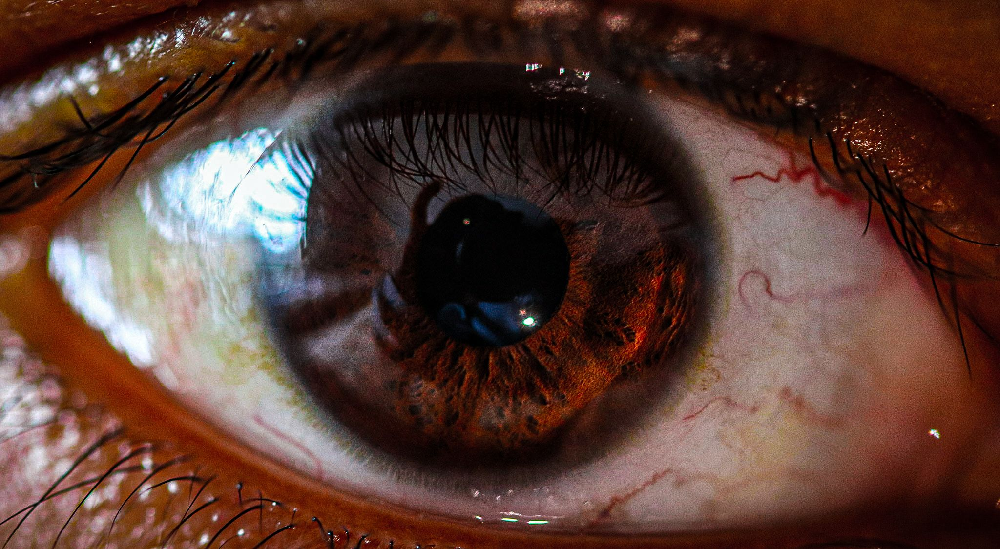
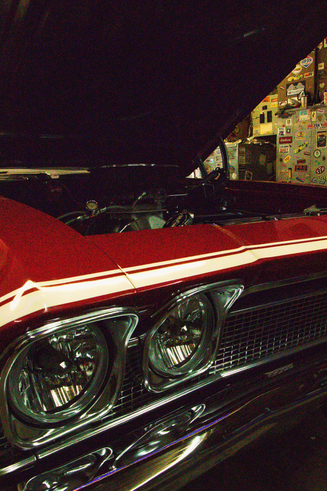
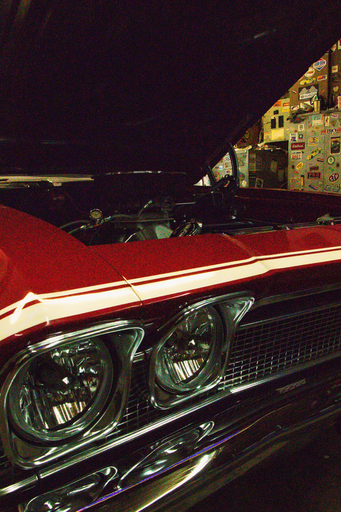

Greetings! I'm Sivasankar, a passionate photographer, cinematographer, and wildlife enthusiast on a visual storytelling journey. Born in the vibrant landscapes of India and honing my skills in the artistic realm of the United Kingdom, I am currently immersed in the world of Interactive Media at Algonquin College in Canada.
Photography & Cinematography:
My lens is not just a tool; it's an extension of my vision. Over the years, I've been recognized for my dedication and creativity, earning awards, including the prestigious Best Assistant Cinematographer accolade. Working alongside seasoned professionals has not only sharpened my technical prowess but has also enriched my understanding of the art of visual storytelling.
Wildlife Photography:
Nature's wonders have always fascinated me, and my journey as a wildlife photographer allows me to capture the untamed beauty of the natural world. From the dense jungles of India to the scenic landscapes of the United Kingdom, and now exploring the diverse Canadian wildlife, each click is a testament to my commitment to preserving the beauty of our planet.
Education:
Currently enrolled in Interactive Media at Algonquin College, I am constantly exploring new avenues to enhance my creative skills. This dynamic field allows me to blend technology with art, creating immersive and engaging visual experiences.
 
